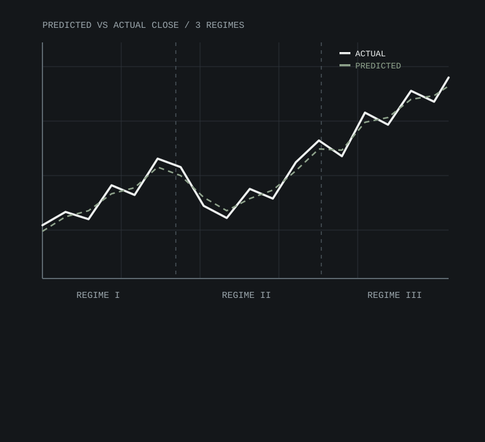

Stock Price Prediction — LSTM
~92% directional accuracy · Feb 2026
FEB 2026
Short-term stock direction is notoriously noisy to predict from price history alone.
- Python
- TensorFlow/Keras
- pandas
- NumPy
- Matplotlib
- Engineered an LSTM forecasting model in TensorFlow/Keras on 5+ years of historical stock data, achieving ~92% directional accuracy through MinMax-scaled preprocessing and sequence-length tuning
- Ran 50+ hyperparameter tuning experiments across lookback window, LSTM units, and learning rate, reducing validation loss by ~35% and cutting mean absolute error to ~$2.10 per share
- Visualized predicted vs. actual prices across 3 market regimes (bull, bear, sideways) using Matplotlib, validating model robustness under volatility